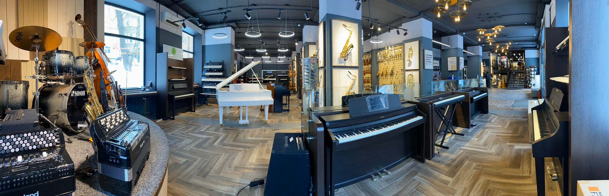

Аренда музыкального оборудования
Добро пожаловать в музыкальный дисконт-центр «Музология»! Мы предлагаем широкий спектр услуг для музыкантов и любителей звука. Здесь вы найдете всё необходимое для создания качественного звучания: от профессионального оборудования до музыкальных инструментов. Наш центр – это место, где музыка оживает и становится доступной каждому.

О компании «Музология»
Компания «Музология» – ваш надежный партнер в мире музыкальных инструментов. Мы работаем как с профессиональными музыкантами, так и с начинающими. Наши клиенты ценят нас за качественный ассортимент, доступные цены и профессиональный подход. Мы являемся официальными дилерами ведущих брендов, что позволяет нам предлагать оригинальную продукцию с гарантией.
В ассортименте: гитары, клавишные инструменты, барабанные установки, звуковые системы, усилители, аксессуары и многое другое. Каждый найдет то, что подходит именно ему. Мы предлагаем не только новые инструменты, но и проверенные временем, уцененные товары высокого качества.
Реализация БУ музыкальных инструментов
Мы знаем, как важно иметь возможность приобрести качественный инструмент по доступной цене. Именно поэтому в нашем каталоге представлены инструменты, которые использовались на концертах, выставках или были витринными образцами. Перед продажей каждое устройство проходит тщательную диагностику и предпродажную подготовку, включая настройку и проверку функциональности.
Наши товары полностью соответствуют стандартам качества, а опытные специалисты готовы помочь вам с выбором. БУ инструменты – это не только экономия, но и возможность прикоснуться к профессиональному оборудованию.
Мастер-классы и концерты
В «Музологии» регулярно проходят мастер-классы и концерты, где вы сможете увидеть профессионалов за работой, получить советы и вдохновиться новыми идеями. Мы стремимся создавать пространство для общения и творчества, где музыканты могут обмениваться опытом и открывать для себя что-то новое.
После мероприятий демонстрационные инструменты попадают на полки нашего магазина. Это отличная возможность приобрести товар высочайшего качества по сниженной цене. Участвуйте в наших событиях и становитесь частью большой музыкальной семьи!
Квалифицированные сотрудники
Наша команда – это профессионалы, для которых музыка не просто работа, а образ жизни. Все наши сотрудники имеют музыкальное образование и опыт работы в индустрии, что позволяет им помогать клиентам выбирать инструменты, которые полностью соответствуют их требованиям.
Мы ценим каждого клиента и стремимся предоставить высокий уровень сервиса. Обратившись к нам, вы получите грамотную консультацию и сможете быть уверены, что сделали правильный выбор. Мы всегда готовы поделиться своим опытом и знаниями, чтобы ваше музыкальное путешествие было успешным.